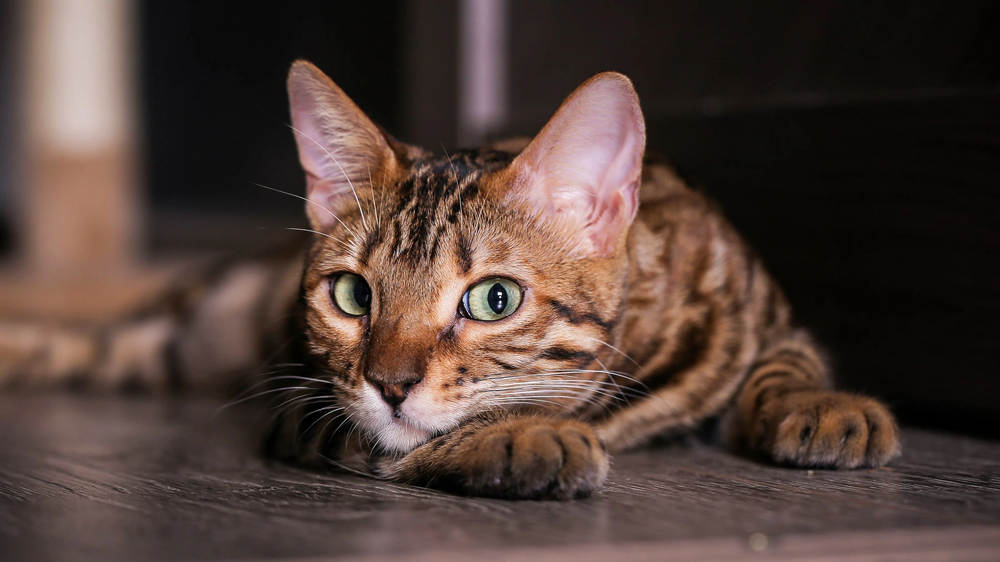

— короткошерстная, от среднего до крупного размера, с изящным, но очень мускулистым телом. Эта красивая порода имеет один из самых необычных окрасов — ее пятна напоминают узоры леопарда. Бенгалы похожи на диких кошек — у них необыкновенно мягкая шерсть, длинные хвосты, большие уши. Вес взрослого самца может достигать восьми килограммов.
Характер:
Бенгалы энергичны, проворны и игривы. Они готовы прыгать, лазать, бегать и «охотиться» — дайте только пространство и возможность. Эти красавцы довольно ласковые и требуют внимания от людей, особенно хозяев. Они любознательные и верные компаньоны, хорошо уживаются с другими домашними животными и с удовольствием участвуют в жизни семьи.